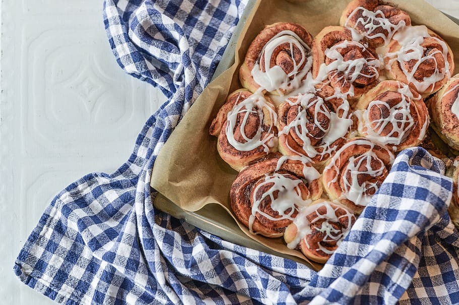

Goda nybakade kanelbullar (kallas även kanelsnäckor eller kanelsnurror), redo att avnjutas!
Processen tar ungefär 2,5 timmar
Det blir 50 stycken kanelbullar
Näringsvärde per bulle 117 kcal
* 50 gram jäst för söta degar
* 150 gram smör
* 5 dl mjölk
* 1 dl strösocker
* 2 krm salt
* 3 tsk malen kardemumma
* 11-13 dl (660-780 g) vetemjöl
* 100 g smör
* 1 dl strösocker
* 1 msk kanel
* ca 10 dl pärlsocker
Deg: Smula jästen i en bunke. Smält matfettet i en kastrull eller i en skål i mikrovågsugnen på full effekt (max 800 W) ca 30 sek. Tillsätt mjölken och värm till fingervarmt (37°C). Häll lite av degvätskan över jästen och rör tills den löst sig. Tillsätt resten av degvätskan, socker, salt och nästan allt vetemjölet, spara lite till utbakningen. Arbeta degen smidig för hand eller i maskin tills degen släpper bunkens kanter. Låt degen jäsa övertäckt ca 30 min. Öppna timer: 30 minuter Fyllning: Rör matfettet smidigt med socker och kanel till fyllningen. Ta upp degen på arbetsbänk och knåda den smidig med resterande mjöl. Kavla ut degen till en platta, ca 30x40 cm (för 20 st). Bred på fyllningen och rulla ihop från långsidan. Skär rullen i ca 2 cm breda bitar. Lägg bitarna med snittytan uppåt på en bakpappersklädd plåt eller i bullformar av papper Låt bullarna jäsa under bakduk ca 20 min. Öppna timer: 20 minuter Pensling: Pensla bullarna med uppvispat ägg och strö över lite pärlsocker. Grädda bullarna mitt i ugnen i 250°C, ca 8 min. Låt kallna på galler under bakduk innan de packas i påse eller burk med lock. Öppna timer: 8 minuter